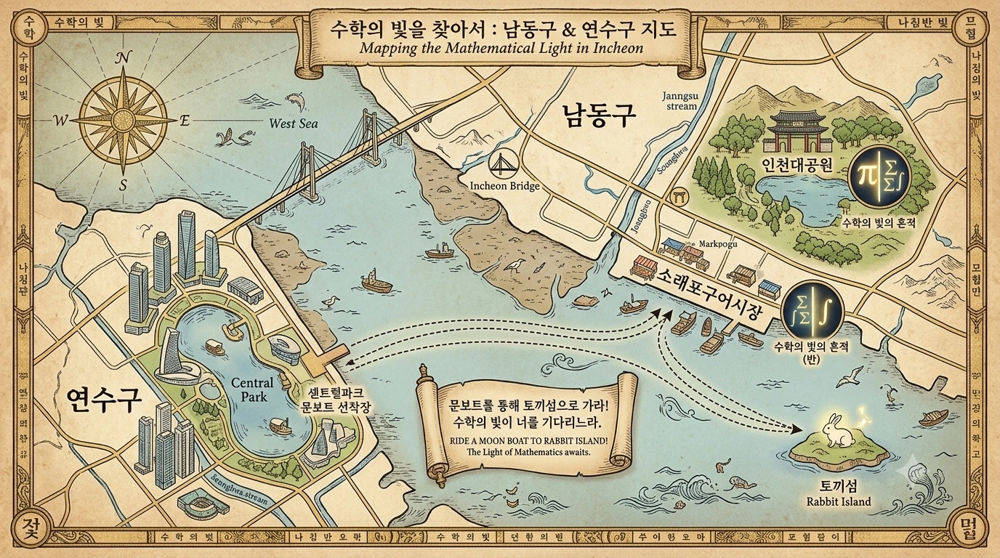
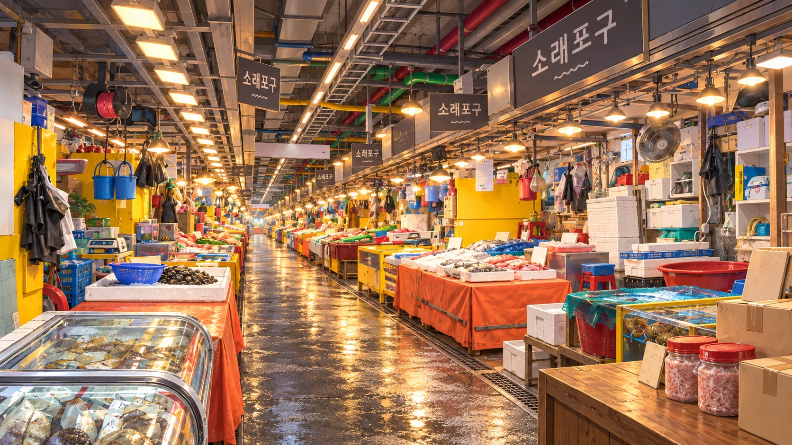

NAMDONG · YEONSU

EXPLORER'S MAP · 학생 원본

TRAVEL NOTE · 실제 풍경
눈으로 먼저 떠나는 여행
BEFORE PLAY · 수학과 조작 알아보기
이렇게 해요
수학의 빛이 남동·연수를 밝혀요
숲에서 발견한 빛, 시장에서 되찾은 빛이 물길 위에서 만나요.

LIGHT FOUND
빛을 품고 다시 버스로

숲에서 발견한 빛, 시장에서 되찾은 빛이 물길 위에서 만나요.

진행을 저장할 수 없어 이 창에서만 이어집니다.